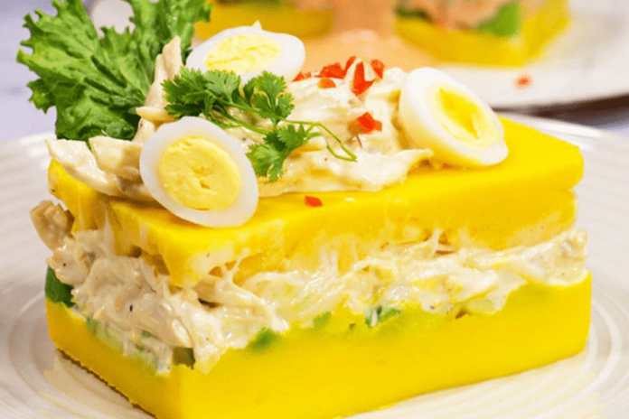

Pollo a la brasa

Del pollo a la brasa se puede decir que es uno de los platos más populares
de la gastronomía peruana. No existe peruano que no haya ido a la pollería
(lugar especializado en su preparación y venta) más cercana para degustar
de esta especialidad culinaria. Suele consumirse, sobre todo como plato
principal acompañado de papas fritas y ensalada.
Ingredientes
- 1 pollo entero de 2 kilos
- ½ taza de sillao
- 3 cdas. de Vinagre Tinto Sibarita
- 2 cdas. de Ajo Siba
- 2 cdas. de sal
- 2 cdtas. de Pimienta Sibarita
- 1/8 de cdta. de Comino Sibarita
- 1 taza de cerveza negra
- ½ cda. de Orégano Molido Sibarita
- ½ cdta. de romero picado
- ¼ cdta. de tomillo
Preparación
-
Como primer paso pondremos a sancochar el kilo de papas amarillas
añadiéndole una cucharada de sal para evitar que se abran y se deshagan,
razón por la que deberemos vigilar la cocción.
-
Una vez cocidas las papas las pelamos y aún cuando estén calientes las
prensaremos hasta conseguir una masa uniforme sin grumos y dejaremos
enfriar.
-
Cuando las papas prensadas estén frías agregaremos el zumo del limón, el
ají amarillo licuado (sin venas), pimienta, sal y poco a poco iremos
probando el grado de acidez.
-
Enseguida añadiremos un chorro de aceite a la masa para mejorar la
textura y mezclaremos con las manos hasta lograr una masa uniforme.
-
Por otro lado podremos a sancochar la pechuga de pollo lo suficiente
hasta que esté cocida para poder deshilacharla y luego la reservamos.
- Sancocharemos las zanahorias para luego picarlas en cuadraditos.
- Sancocharemos las arvejas y las reservaremos.
-
En un bowl mezclaremos el pollo deshilachado, las zanahorias y las
alverjas con mayonesa, sal, pimienta al gusto y reservamos.
-
En una fuente de aluminio estiraremos la primera capa de masa de la
causa para luego empezar a rellenarla por pisos.
- Pondremos una capa de palta cortada.
- Luego una capa más de la masa de la causa.
-
Ahora pondremos el relleno hecho con el pollo, las verduras y la
mayonesa de manera generosa.
-
Y para finalizar cubriremos el relleno con una capa más de la masa.